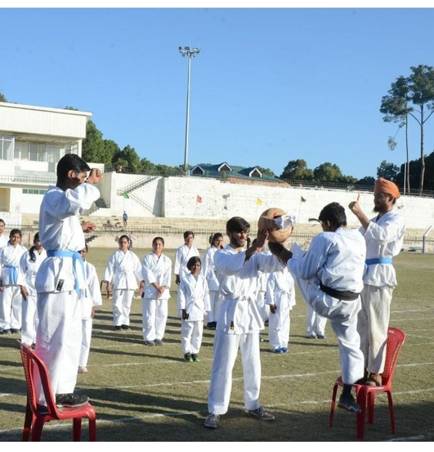
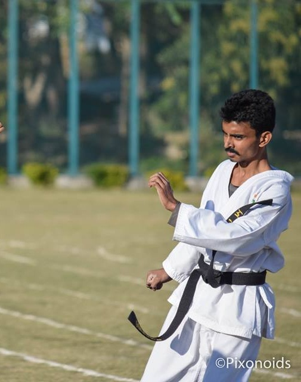
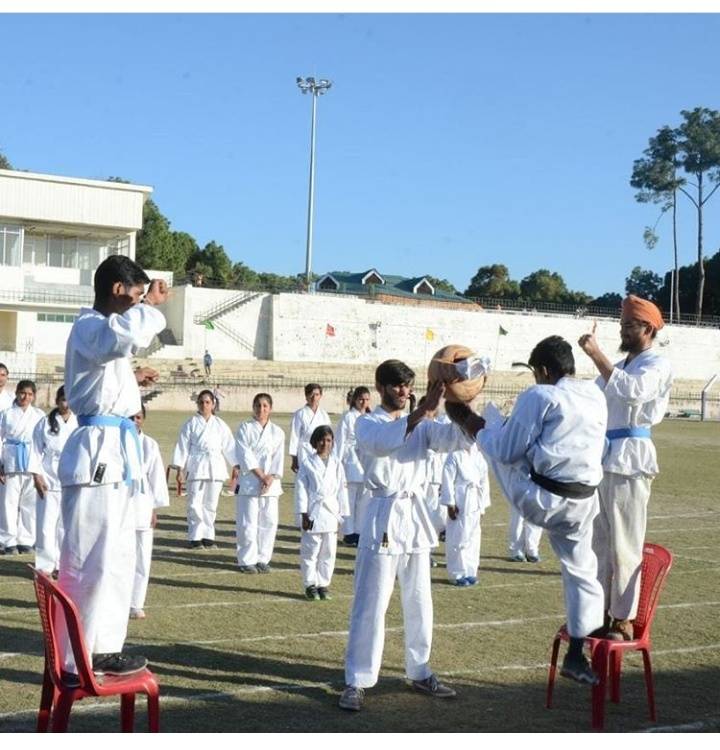
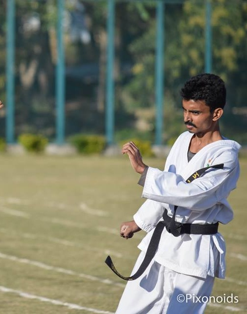
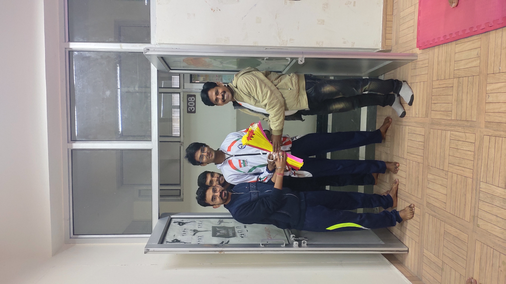
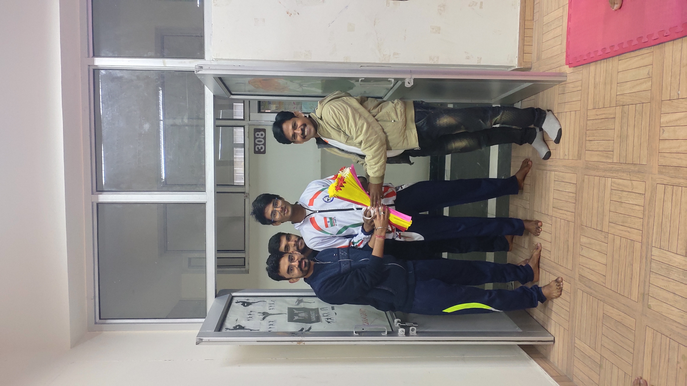
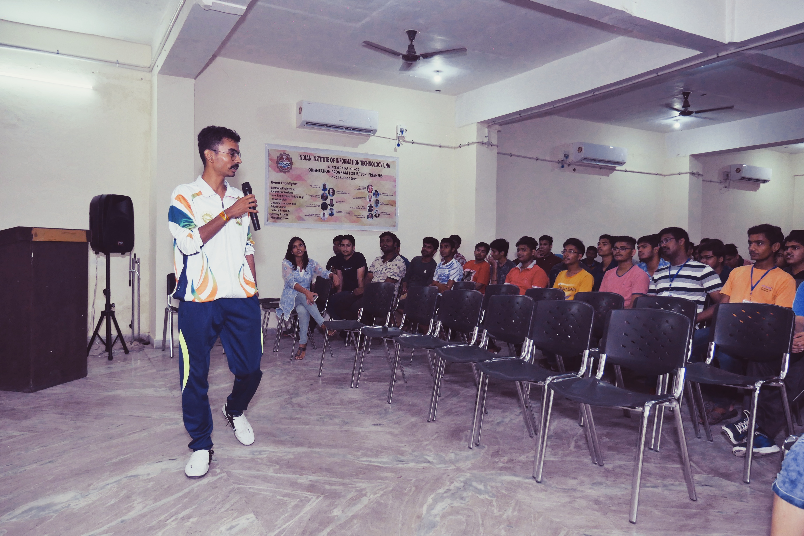
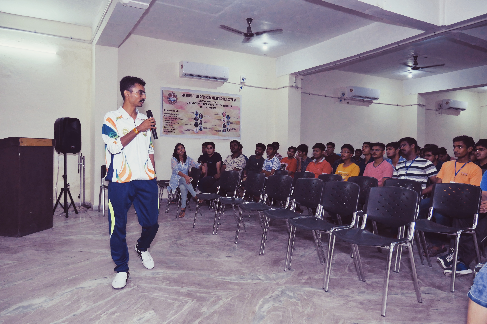

Parade
NIT Hamirpur witnesses a spectacular celebration on republic day and Independence Day with the cadets organizing a grand parade. Martial arts karate academy showcases its sword drill. Rigorous training sessions result in cadets marching with footsteps being in sync with each other and memories etched with the training sessions are treasured by the cadets for life.
More Images →


Kumite Tournament
It is the most awaited event of our yearly schedule. Generally conducted on the onset of spring season, cadets train for week s to participate in their respective weight categories. Skills learned by cadets and the hard work put in for improving their physical strength, stamina, agility come in handy in Kumite fights. Cadets get awarded for their excellent performance in the tournament.
More Images →Lalkaar
The event sees the student’s josh go sky high; Martial arts karate academy also shows its presence in the annual Sports Meet of NIT Hamirpur by exhibiting sword drill parade, skills in Close Quarter Combat and performing Kata (Choreographed complex patterns of martial arts movements).
More Images → 



Belt Grading Test
“Belt Grading Test” is conducted by the Academy two times in a year. Testing checks the progress of a cadet and it is vital for the learning process. The Major parameters of belt grading test are the overall performance of the student in Academy, Regularity, Knowledge of Martial Arts and the knowledge of various techniques of Self-defense, Kata, Kumite (Fight Match).
More Images → 

Self-defense &
Unarmed Combat Camp
Self-defense and unarmed combat camp is organized annually to train the students of the college in self-defense, unarmed combat and survival tactics. It is also conducted for girls to promote women empowerment.
More Images → 
